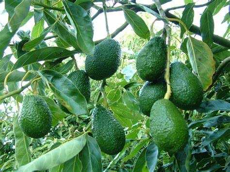
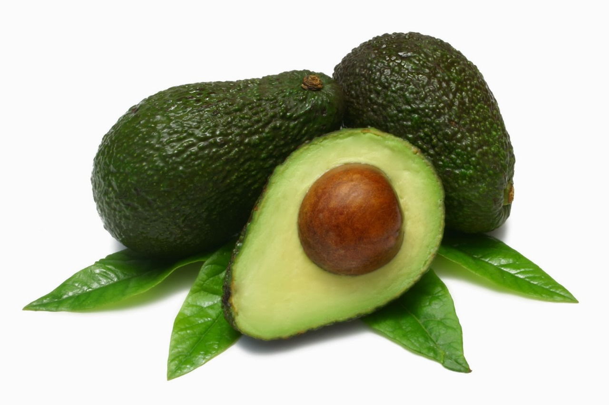
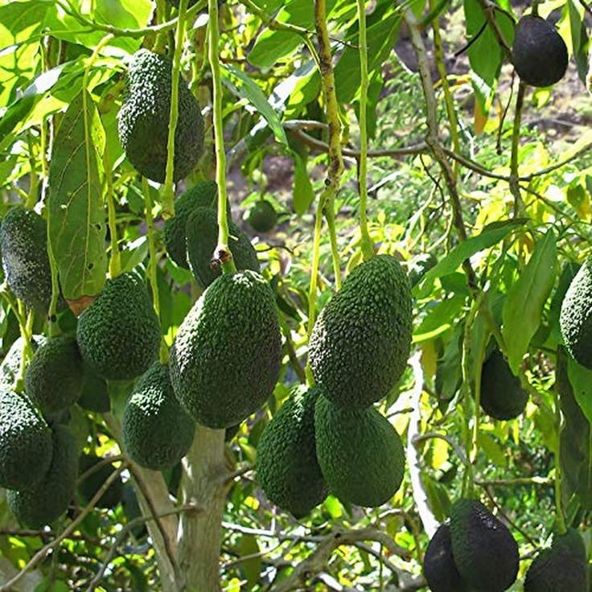
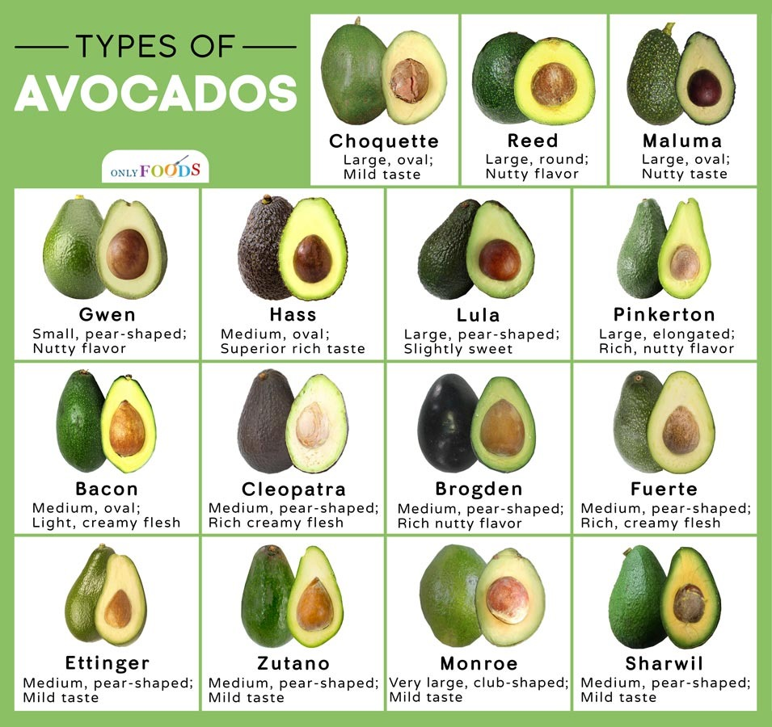

Avocado farming is a promising venture in India due to the increasing demand for this nutritious fruit. Avocado trees can grow in a wide range of climates, making it suitable for cultivation in various regions of India. However, avocado farming requires careful planning and execution to ensure success and profitability. Here is an overview of avocado farming in India, including suitable climatic conditions, soil requirements, and optimal locations for cultivation
The soil should be well-draining and rich in organic matter.
Avocado trees prefer a slightly acidic soil with a pH range of 5.5 to 6.5.
Sandy loam soils are ideal for avocado farming,
while heavy clay soils should be avoided.
Prior to planting, the soil should be tested and amended with necessary nutrients and fertilizers.
Site selection and soil preparation are crucial aspects of successful avocado farming in India.
The ideal location for avocado cultivation is an area with well-drained soil and a warm, humid climate.
Avocado trees prefer slightly acidic soil with a pH between 6 and 7.5.
Before planting, it is important to test the soil and adjust the pH levels if necessary.
It is also important to select a site that is sheltered from strong winds, which can damage avocado trees.
Avoid planting in areas with water-logging or poor drainage as this can cause root rot and other diseases.
When preparing the soil, ensure that the area is free of weeds and other debris that can interfere with tree growth.
Avocado trees require adequate sunlight and protection from strong winds. Therefore, it is best to plant them in areas with partial shade and good windbreaks. Sloping terrain with good drainage is also ideal for avocado cultivation. Coastal regions with moderate temperatures and high humidity are particularly suitable for avocado farming in India. With the right conditions and proper management techniques, avocado farming can be a profitable and sustainable venture in India. In the next section, we will discuss the step-by-step guide to setting up an avocado farm in India.

Avocado farming in India requires careful selection of the appropriate variety based on the climate and soil conditions.
While several avocado varieties are available worldwide, not all of them are suitable for Indian climatic conditions.
The choice of the right variety of avocado for farming can significantly impact the tree’s yield and overall health.
Depending upon a colour there are two coloured varities that can be grown in india that are balck and green.
Black-
Hass
Hass vareity is grown in area having temperature below 35'Celsicus. They are most suitable to north east states and south india regions.
Green-
Pinkerton
Ettinger
Reed
Green vareity is grown in area having temperature range which can tolerate upto 45'Celsicus.
Here are some of the best avocado varieties that are suitable for the Indian climate:
Avocado Variety-----Characteristics-----Cultivation Technique
Hass
-Small to medium-sized fruit with pebbled green skin turning black when ripe. Creamy and nutty-flavored flesh. -Grafted on to the dwarf rootstock of Mexican or Guatemalan type.
Suitable for cultivation in the southern and western parts of India.
Bacon
-Oval-shaped fruit with a smooth green skin and a mild flavor. Larger-sized fruit compared to other varieties. Grafted using Mexican rootstock.
Best suited for cultivation in the northern parts of India.
Fuerte
-Oval-shaped fruit with a smooth, thin green skin. Rich and buttery flavor with a high oil content.
Grafted on to the dwarf rootstock of Mexican type. Best suited for cultivation in the southern and western parts of India.
Some avocado varieties that are not suitable for Indian conditions include:
Choquette
Lula
Gwen
* Planting:
In India, avocado is commonly propagated through seeds. The viability of seeds of avocado is quite short (2 to 3 weeks) but this can be improved by storing the seed in dry peat or sand at 5(C. Removal of seed coat before sowing hastens germination). In Sikkim, all the trees grown are seedlings in origin.
The seeds taken from mature fruits are sown directly in the nursery or in polyethylene bags. When 6-8 months old, the seedlings are ready for transplanting.
Such seedling trees at 10-15 years produce 300 to 400 fruits.usually avocados are trees are plnated in november.
Vegetative propagation by means of budding or grafting has resulted in establishment of selected varietal clones.
* Space: Allow enough space for the tree to grow to its full size (15-30 feet tall and wide depending on the variety).
Avocado is planted out to a distance of 6 to 12 metres depending on the vigour of variety and its growth habit.
For varieties having a spreading type of growth, like Fuerte, a wider spacing should be given.
In areas prone to excess water, they should be planted on mounds as avocados cannot withstand waterlogging.
In Sikkim, a planting distance of 10 x 10 metres on hills slopes (on half-moon terraces) is preferred and planting is done in June-July.
Pits of 90 x 90 centimetres are dug during February-March, and filled with farmyard manure and top soil (1:1 ratio) before planting.
* Bed formation:the regions receiving high waterfall need to have well drainage system to avoid the rot disease in avocoda plant .soil such as cotton soil have high water holding capacity so the farmers are asked to use bed formation techniques.
* Soil Test : Soil containing phytophthara couses rot rooting which leads to the damage of plant and yeild.Soil testing is important to know about the fertatlity of soil.
Here are some tips to help you irrigate your avocado plant correctly:
Pruning is rarely practised except with upright varieties such as Pollock. In spreading varieties like Fuerte, branches are thinned and shortened. Heavy pruning has been found to promote excessive vegetative growth, consequently reducing the yield.
Sprinkler irrigation has been reported to improve the fruit size and oil percentage; also, it advances harvesting time. Irrigation at intervals of three to four weeks during the dry months is beneficial to avocado. To avoid moisture stress during winter season, mulching with dry grass/dry leaves is desirable. Flooding is undesirable as it promotes root rot incidence.
Avocados need heavy manuring, and application of nitrogen has been found to be most essential. In general, young avocado trees should receive N, P2O5 and K2O in a proportion of 1:1:1 and older trees in the proportion of 2:1:2. At a pH of above 7, iron deficiency symptoms may appear, which may be corrected by applying iron chelate at the rate of 35 g/tree.
Various micronutrients (Fe, Zn, B) have profound influences on tree growth, nutrient uptake and yield of avocado. Integrated nutrient management with inorganic fertilizer, supplemented by organic manuring, is advocated for avocado.
In Sikkim, the soil is deficient in nitrogen, zinc and boron. Application of urea in two split doses, in March/April and September/October (just before and after the onset of the monsoon) is recommended. Foliar application of zinc sulphate (0.5 per cent) may be undertaken in April-May, and other fertilizers applied in soil during March-April.
Here are some tips to help you water your avocado plant correctly:
Establishment Phase: Newly planted avocado trees need frequent watering to encourage root establishment.
Water deeply and regularly, ensuring that the root ball remains consistently moist but not waterlogged.
This may require watering every 2-3 days, especially during hot and dry weather.
Mature Trees: Once established, mature avocado trees have moderate water requirements.
They typically need about 1 to 1.5 inches of water per week, equivalent to approximately 25 to 40 gallons per tree.
However, this can vary depending on factors such as temperature, humidity, and soil moisture retention.
Check the Soil Moisture:-
Before watering, check the moisture level of the soil. Stick your finger about an inch into the soil. If it feels dry, it’s time to water.
Avocado plants are produced from seedlings and further grafted with other vareity of shoot for better yeilds.plants are nurture in
shet nets for 6 months.
Tree Maintenance-
Mulching:
Apply a 3-4 inch layer of organic mulch around the base of the tree to conserve moisture, suppress weed growth, and provide nutrients to the tree.
Avoid piling the mulch against the trunk of the tree.
This crop requires heavy manuring nitrogen plays a major role in an avocado fruit farming.
Seedlings of avocado should be applied with N. P205 K20 in a proportion of 1:1:1 whereas older plants can be applied in the ratio of 2:12.
the soils having pH value above 7.0 will show the iron deficiency which can be corrected by adding iron chelate 30 to 35 grams/tree For best yield and
Growth of the avocado,
apply inorganic fertilizers along with organic manures Urea should be in two split doses in the month of March-April and Sept Oct
By following these maintenance and disease management practices, avocado farmers in India can maintain healthy trees and produce high-quality fruit.
Bed Formation:the regions receiving high waterfall need to have well drainage system to avoid the rot disease in avocoda plant.
soil such as cotton soil have high water holding capacity so the farmers are asked to use bed formation techniques.
After a waiting period of 3-4 years, it’s time to reap the rewards of your hard work and dedication.
Avocado plants bear fruits in even and odd year same like mango trees. In 1 acre 160-170 trees of spacing of 3.5 x 3.5 metre and 7 metre can planted.
black vareity can produce upto 4.5 ton/acre avocados at its peak time.
Green variety can produce upto 6 tons/acre of avocados at its peak time.
The average investment for 170(trees) X 3000(rate of single tree) + Irrrigation cost upto 1 lac per acre of avocados.The investment may go upto 6 lac and running labour and fertilizer cost.
For black vareity the average price of avocados per kg may vary upto 200/kg.estimated profit 4.5 tons X 200 = 8 lac/acre.
For Green vareity the average rate is below 200/kg.
Harvesting is a crucial step in avocado farming, as it determines the quality and market value of your product.
The ideal time for harvesting avocados in India is from May to September. Here are some tips on how to harvest avocados:
Use a pole picker or a ladder to reach the topmost branches.
# Twist the fruit gently until it detaches from the tree.
# Place the fruit in a basket or crate, taking care not to damage it.
# Avoid harvesting immature fruits or those that are overripe, as it affects the quality.
Post-harvest practices are equally important for maintaining the quality and shelf-life of avocados.
Here are some best practices:
# Sort the fruits based on size, color, and maturity level.
# Grade the fruits according to quality standards, such as shape, weight, and skin appearance.
# Store avocados in a cool and dry place, away from direct sunlight and moisture.
# Use appropriate packaging materials such as cardboard boxes or plastic crates to protect the fruits during transportation.
# Marketing avocados in India requires proper planning and execution. Here are some tips to succeed:
Identify potential buyers, such as wholesalers, retailers, and exporters.
Offer competitive prices that reflect the quality and market demand for avocados.
Create a strong brand identity and market your produce through various channels, such as social media, e-commerce platforms, and agricultural fairs.
Ensure timely delivery and follow-up with customers to maintain a good relationship.